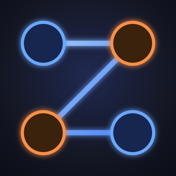
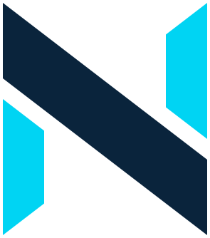

Logic puzzle · Android
Trazen
Connect the numbers in order and find the path that links each one to the next. 100 levels and a new challenge every day.
- Free
- No ads
- Offline
- No sign-up


Numik LabsWe are Numik Labs, a small, independent studio from Spain. We make games, apps and digital products from ideas we want to turn into something real.

Logic puzzle · Android
Connect the numbers in order and find the path that links each one to the next. 100 levels and a new challenge every day.
Trazen is our first project. An idea we decided to make real, and the starting point of Numik Labs.
We want to keep creating: games, apps and any idea that deserves to become more than just an idea.
We like ideas that are simple, well thought out and easy to understand.
Every idea goes through many rounds before it ships: sketches, tests and discarded paths until it truly works.
We take time over the details that matter and build products we can be proud of.
Got an idea, found a bug or want to write about us? We'd love to hear from you.
If you enjoy what we do, a coffee on Ko-fi helps us keep creating.